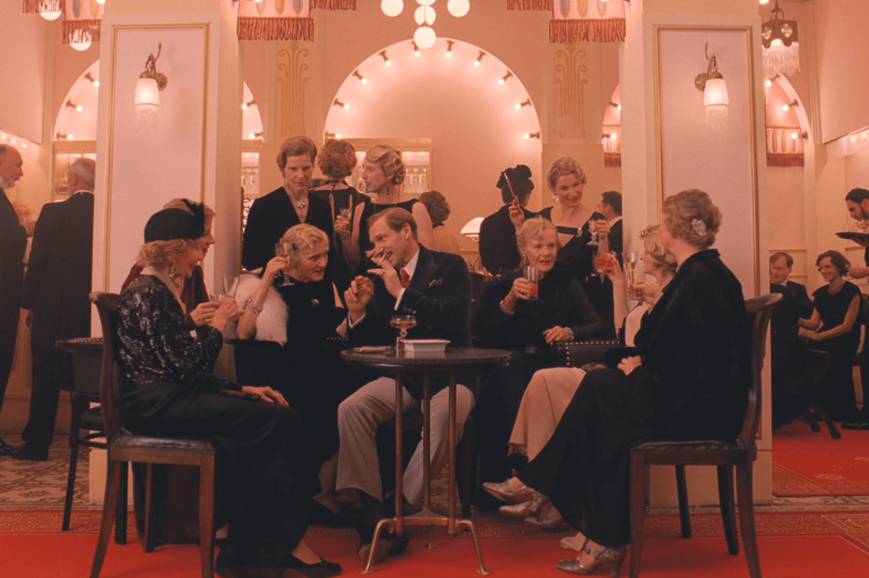

About
“A movie that seems to be constantly passing through a super-sensory fairy tale book”
Wes Anderson's work is special. Wes Anderson's work is so distinct that it can be classified into a movie genre, not a style. It shows Wes Anderson's unique and unique mise-en-scene, including colorful and sensuous pastel-toned colors, perfect symmetrical composition, vertical/horizontal camera work, and props. Except for the lead actors, most actors are used like props in the movie. Wes Anderson's work shows a thoroughly restrained performance as the director intended rather than a deep and deep individual performance. That's why Wes Anderson's movie feels like watching a puppet show.
Color
-
Pink
The pink packaging boxes of the Mendel bakery, where Agatha and Zero, which are the best scenes in the movie, fell while avoiding Dmitry's attack, and the pinks throughout the movie make viewers feel various emotions. In this movie, 'Pink' is also used as a color to symbolize 'people's greed' behind the colorful and happy hotels of the past
-

Red
The hotel staff, dressed in primary-colored 'purple' uniforms that can be seen from a distance, symbolically represented as the hotel's most prominent figures and made them stand out in the hotel. In addition, the scene expressed only in primary red and purple in the narrow elevator allowed the audience to enjoy a visually intense pleasure.
-
Black
At the end of the movie, there is a scene in black and white that makes the title "Movie Expressing the Intensity of Color" seem strange. The contrasting intensity of the color at that time had the power to make the movie look back when it was changed to a primary color scene after continuing to look at black and white scenes.
Screen Ratio
-

- 1980s: Recalling scene (1.85:1)
- The first scene of the movie begins with a 1.85:1 screen. It's the most common screen ratio used today. The period in the 1980s, when the author appeared and recalled meeting Zero, is shown on a flat screen of 1.85:1